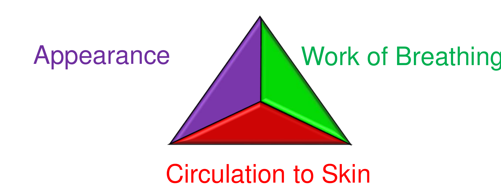

לחצו בכל מקום לסגירה · click anywhere to close
משולש ההערכה · סקר ראשוני ABCDE · הערכה–זיהוי–התערבות · סימנים חיוניים לפי גיל
PAT · ABCDE primary survey · Evaluate–Identify–Intervene · age-specific vitals
מבוסס על חומרי MSR ("גישה למצבי חירום פדיאטריים") ועל AHA PALS 2025 (Part 8).
רושם ראשוני מהסתכלות והאזנה (משולש ההערכה) — לזיהוי מהיר של מצבים לא תקינים, קביעת דרגת החומרה והדחיפות וקווים כלליים לטיפול.
הערכה קלינית מסודרת לפי ABCDE, הכוללת בדיקות והתערבויות טיפוליות תוך כדי תנועה.
הגדרת גילאים: תינוק — חודש עד שנה · ילד — שנה עד 8 (או עד 25 ק"ג) · מבוגר — מגיל 8 ומעלה.
A first impression from looking and listening (the Assessment Triangle) — rapidly identifying abnormal states, severity and urgency, and general direction of care.
A structured clinical assessment by ABCDE, including examinations and therapeutic interventions along the way.
Age definitions: infant — 1 month to 1 year · child — 1 year to 8 (or up to 25 kg) · adult — 8 years and older.

איזו מערכת פיזיולוגית נפגעה?
מה דרגת החומרה של המחלה או הפגיעה?
מה מהירות ההתערבות, ואיזה טיפול לתת?
היתרון: רושם מהיר על מצב הילד מבלי לגעת בו, המאפשר תעדוף להמשך הטיפול. השילוב בין עבודת נשימה למצב הכרה מגדיר את דרגת המצוקה: היפוקסיה ← אי-שקט; היפרקרביה ← ירידה בערנות.
Which physiologic system is affected?
How severe is the illness or injury?
How urgently to intervene, and with what?
Advantage: a rapid impression without touching the child, allowing prioritization of care. Appearance + work of breathing together grade the distress: hypoxia → agitation; hypercarbia → decreased alertness.
| מצב | הכרה | עבודת נשימה | פרפוזיה | דוגמאות |
|---|---|---|---|---|
| פגיעה בתפקוד המח | חריג | תקין | תקין | ספסיס · היפוגליקמיה · הרעלה · פגיעת ראש |
| מצוקה נשימתית | תקין | חריג | תקין | אסטמה · ברונכיוליטיס · דלקת ריאות |
| כשל נשימתי | חריג | חריג | תקין | אסטמה חריפה · קונטוזיה ריאתית |
| שוק מפוצה | תקין | תקין | חריג | שלשולים · איבוד דם חיצוני |
| שוק בלתי מפוצה | חריג | תקין | חריג | גסטרואנטריטיס חמורה · כוויות |
| State | Appearance | Breathing | Circulation | Examples |
|---|---|---|---|---|
| CNS / metabolic | abnormal | normal | normal | Sepsis · hypoglycemia · poisoning · head injury |
| Respiratory distress | normal | abnormal | normal | Asthma · bronchiolitis · pneumonia |
| Respiratory failure | abnormal | abnormal | normal | Severe asthma · pulmonary contusion |
| Compensated shock | normal | normal | abnormal | Diarrhea · external blood loss |
| Decompensated shock | abnormal | normal | abnormal | Severe gastroenteritis · burns |
פתוח / ניתן לשמירה / לא ניתן לשמירה. מנח, שאיבה, מנתב אוויר.
קצב, מאמץ, קולות, סטורציה, התרוממות חזה; ETCO₂ אם זמין.
דופק (מרכזי + פריפרי), ל"ד, מילוי קפילרי, עור, תפוקת שתן.
AVPU או GCS, אישונים, סוכר בדם, סימנים מוקדיים.
מדידת חום, בדיקת עור מלאה, סימני טראומה — ואז חימום.
Patent / maintainable / not maintainable. Positioning, suction, airway adjunct.
Rate, effort, sounds, SpO₂, chest rise; ETCO₂ if available.
Pulses (central + peripheral), BP, cap refill, skin, urine output.
AVPU or GCS, pupils, glucose, focal signs.
Temperature, full skin exam, signs of trauma — then re-warm.
↻ חוזרים על המחזור באופן מתמשך
↻ repeat the cycle continuously
| גיל | דופק (לדקה) | נשימות (לדקה) | ל"ד סיסטולי — גבול תחתון |
|---|---|---|---|
| יילוד (0–3 ח') | 85–205 | 30–60 | 60 |
| תינוק (3–12 ח') | 100–180 | 30–50 | 70 |
| פעוט (1–3 ש') | 90–150 | 22–37 | 70 + (2 × גיל) |
| גיל הגן (3–6) | 80–140 | 20–28 | 70 + (2 × גיל) |
| גיל ביה"ס (6–12) | 70–120 | 18–25 | 70 + (2 × גיל) |
| מתבגר (≥12) | 60–100 | 12–20 | ≥90 |
| Age | HR (/min) | RR (/min) | SBP — lower limit |
|---|---|---|---|
| Newborn (0–3 mo) | 85–205 | 30–60 | 60 |
| Infant (3–12 mo) | 100–180 | 30–50 | 70 |
| Toddler (1–3 y) | 90–150 | 22–37 | 70 + (2 × age) |
| Preschool (3–6 y) | 80–140 | 20–28 | 70 + (2 × age) |
| School (6–12 y) | 70–120 | 18–25 | 70 + (2 × age) |
| Adolescent (≥12 y) | 60–100 | 12–20 | ≥90 |